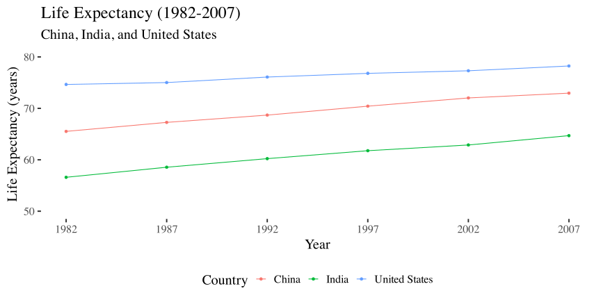

A <- c(5,10,15)
B <- c(5,15,25)Manipulating and Summarizing Data
CS&SS 508 • Lecture 5
31 October 2023
Victoria Sass
Roadmap
Last time, we learned about,
- Useful coding tips: packages, directories, and saving data
- Basics of ggplot: layers and aesthetics
- Advanced ggplot tools
. . .
Today, we will cover,
- Building blocks
- Subsetting data
- Modifying data
- Summarizing data
- Merging together data
Death to Spreadsheets
Tools like Excel or Google Sheets lets you manipulate spreadsheets using functions.
- Spreadsheets are not reproducible: It’s hard to know how someone changed the raw data!
- It’s hard to catch mistakes when you use spreadsheets. Don’t be the next sad Research Assistant who makes headlines with an Excel error! (Reinhart & Rogoff, 2010)
Today, we’ll use R to manipulate data more transparently and reproducibly.
Building Blocks
- Logical Operators (
!=,==,>,<=, etc. ) - Combining Logical Operators (
&,|)
Logical Operators
Logical operators refer to base functions which allow us to test a connection between two objects.
. . .
For example, we may test
- Is A equal to B?
- Is A greater than B?
- Is A within B?
and many others!
Logical Operators in Code
==: is equal to (note: there are TWO equal signs here!)
. . .
!=: not equal to
. . .
>,>=,<,<=: less than, less than or equal to, etc.
. . .
%in%: used with checking equal to one of several values
Examples of Logical Operators
Let’s create two objects, A and B
. . .
A == B[1] TRUE FALSE FALSEA > B[1] FALSE FALSE FALSEA %in% B[1] TRUE FALSE TRUECombining Logical Operators
We have three main ways to combine logical operators:
&: both conditions need to hold (AND)
. . .
|: at least one condition needs to hold (OR)
. . .
!: inverts a logical condition (TRUEbecomesFALSE,FALSEbecomesTRUE)
Examples
A <- c(5,10,15)
B <- c(5,15,25). . .
A > 5 & A <= B[1] FALSE TRUE TRUEB < 10 | B > 20[1] TRUE FALSE TRUE!(A == 10)[1] TRUE FALSE TRUEAside: dplyr
Today, we’ll use tools from the dplyr package to manipulate data!
Like
ggplot2,dplyris part of the Tidyverse, a modern collection of data science tools introduced by Hadley Wickham.You can read more about the tidyverse on its website.
. . .
To get started, let’s install (in the console) and load (in an R/qmd file) dplyr. (We also load gapminder!)
# install.packages("dplyr")
library(dplyr)
library(gapminder)Building Block of dplyr: Pipes
dplyr allows us to “pipe” data between functions using the (%>%) operator. So instead of nesting functions like this:
log(mean(gapminder$pop))[1] 17.20333. . .
We can pipe them like this:
gapminder$pop %>% mean() %>% log()[1] 17.20333. . .
- Pipes read “left to right.” (intuitive)
- Nested functions read “inside to out.” (kinda weird; gets unwieldy the more nested your code becomes)
Subsetting data
filter()select()distinct()
Subset Rows: filter
We often get big datasets, and we only want some of the entries. We can subset rows using filter.
. . .
gapminder |>
filter(country == "China") |>
head(4) # display first four rows# A tibble: 4 × 6
country continent year lifeExp pop gdpPercap
<fct> <fct> <int> <dbl> <int> <dbl>
1 China Asia 1952 44 556263527 400.
2 China Asia 1957 50.5 637408000 576.
3 China Asia 1962 44.5 665770000 488.
4 China Asia 1967 58.4 754550000 613.China <- gapminder |>
filter(country == "China")(Now, China is an object in our environment which contains rows corresponding to China.)
Subset Columns: select
What if we want to keep each entry, but only use certain variables? Use select!
. . .
gapminder |>
select(country,continent,year,lifeExp) |>
head(4)# A tibble: 4 × 4
country continent year lifeExp
<fct> <fct> <int> <dbl>
1 Afghanistan Asia 1952 28.8
2 Afghanistan Asia 1957 30.3
3 Afghanistan Asia 1962 32.0
4 Afghanistan Asia 1967 34.0Dropping columns with select
Alternatively, we can use select() to drop variables using a - sign:
gapminder |>
select(-continent, -pop, -lifeExp) |>
head(4)# A tibble: 4 × 3
country year gdpPercap
<fct> <int> <dbl>
1 Afghanistan 1952 779.
2 Afghanistan 1957 821.
3 Afghanistan 1962 853.
4 Afghanistan 1967 836.Finding Unique Rows: distinct
You may want to find the unique combinations of variables in a dataset. Use distinct
. . .
gapminder |>
distinct(continent, year) |>
head(6)# A tibble: 6 × 2
continent year
<fct> <int>
1 Asia 1952
2 Asia 1957
3 Asia 1962
4 Asia 1967
5 Asia 1972
6 Asia 1977distinct drops variables!
By default, distinct() drops unused variables. If you don’t want to drop them, add the argument .keep_all = TRUE:
gapminder |>
distinct(continent, year, .keep_all=TRUE) |>
head(6)# A tibble: 6 × 6
country continent year lifeExp pop gdpPercap
<fct> <fct> <int> <dbl> <int> <dbl>
1 Afghanistan Asia 1952 28.8 8425333 779.
2 Afghanistan Asia 1957 30.3 9240934 821.
3 Afghanistan Asia 1962 32.0 10267083 853.
4 Afghanistan Asia 1967 34.0 11537966 836.
5 Afghanistan Asia 1972 36.1 13079460 740.
6 Afghanistan Asia 1977 38.4 14880372 786.Modifying data
arrange()rename()mutate()
Sorting data by rows: arrange
Sometimes it’s useful to sort rows in your data, in ascending (low to high) or descending (high to low) order. We do that with arrange.
. . .
US_and_Canada <- gapminder |>
filter(country %in% c("United States","Canada"))
US_and_Canada |>
arrange(year,lifeExp) |>
head(4)# A tibble: 4 × 6
country continent year lifeExp pop gdpPercap
<fct> <fct> <int> <dbl> <int> <dbl>
1 United States Americas 1952 68.4 157553000 13990.
2 Canada Americas 1952 68.8 14785584 11367.
3 United States Americas 1957 69.5 171984000 14847.
4 Canada Americas 1957 70.0 17010154 12490.Sorting data by rows: arrange
To sort in descending order, using desc() within arrange
US_and_Canada |>
arrange(desc(pop)) |>
head(4)# A tibble: 4 × 6
country continent year lifeExp pop gdpPercap
<fct> <fct> <int> <dbl> <int> <dbl>
1 United States Americas 2007 78.2 301139947 42952.
2 United States Americas 2002 77.3 287675526 39097.
3 United States Americas 1997 76.8 272911760 35767.
4 United States Americas 1992 76.1 256894189 32004.Rename variables: rename
You may receive data with unintuitive variable names. You can change them using rename().
. . .
US_and_Canada |>
rename(life_expectancy = lifeExp) |>
head(4)# A tibble: 4 × 6
country continent year life_expectancy pop gdpPercap
<fct> <fct> <int> <dbl> <int> <dbl>
1 Canada Americas 1952 68.8 14785584 11367.
2 Canada Americas 1957 70.0 17010154 12490.
3 Canada Americas 1962 71.3 18985849 13462.
4 Canada Americas 1967 72.1 20819767 16077.* NOTE 1: I did not re-save the object US_and_Canada, so the name change is not permanent!
* NOTE 2: I recommend against using spaces in a name! It makes things really hard sometimes!!
Create new columns: mutate
You can add new columns to a data frame using mutate().
. . .
For example, perhaps we wish to state the population in millions:
# A tibble: 5 × 4
country year pop pop_millions
<fct> <int> <int> <dbl>
1 Canada 1952 14785584 14.8
2 Canada 1957 17010154 17.0
3 Canada 1962 18985849 19.0
4 Canada 1967 20819767 20.8
5 Canada 1972 22284500 22.3Summarizing data
summarize()group_by()
Summarizing data: summarize
summarize() calculates summaries of variables in your data:
- Count the number of rows
- Calculate the mean
- Calculate the sum
- Find the minimum or maximum value
You can use any function inside summarize() that aggregates multiple values into a single value (like sd(), mean(), or max()).
summarize() Example
For the year 1982, let’s summarize some values in gapminder
gapminder |>
filter(year == 1982) |>
summarize(number_observations = n(),
max_lifeexp = max(lifeExp),
mean_pop = mean(pop),
sd_pop = sd(pop))# A tibble: 1 × 4
number_observations max_lifeexp mean_pop sd_pop
<int> <dbl> <dbl> <dbl>
1 142 77.1 30207302. 105098650.Summarizing data by groups: group_by
What if we want to summarize data by category? Use group_by and summarize
. . .
Functions after group_by() are computed within each group as defined by variables given, rather than over all rows at once.
group_by() Example
# A tibble: 4 × 2
year total_pop
<int> <int>
1 1952 172338584
2 1957 188994154
3 1962 205523849
4 1967 219531767Because we did group_by() with year then used summarize(), we get one row per value of year!
Merging together data
left_join()full_join()
Why merge?!
In practice, we often collect data from different sources. To analyze the data, we usually must first combine (merge) them.
. . .
For example, imagine you would like to study county-level patterns with respect to age and grocery spending. However, you can only find,
- County level age data from the US Census, and
- County level grocery spending data from the US Department of Agriculture
. . .
Merge the data!!
Merging in Concept
When merging datasets A and B, ask yourself the following two questions:
. . .
Which rows do I want to keep?
- All rows in
A? - All rows in both
AandB?
- All rows in
. . .
How do my datasets connect?
- Is there a specific variable they have in common?
- Multiple variables they have in common?
Which Rows to Keep:
We’ll focus on two types of joins1:
1 Other types include right_join, inner_join, semi_join, and anti_join, but we won’t study those here.
A |> left_join(B): keepsAand adds variables fromBafter matching.A |> full_join(B): keeps all ofAandB, but combines rows when possible.
Matching Criteria
We have to tell R which variables to use when merging datasets! Rows are matched when the values in matching variables are equivalent.
. . .
by = c("County"): Both datasets have aCountyvariable, match on this!
. . .
by = c("CountyName" = "County_Name"): MatchCountyNameinAwithCounty_NameinB
Example: nycflights13 Data
The nycflights13 package includes five data frames, some of which contain missing data (NA):
flights: flights leaving JFK, LGA, or EWR in 2013airlines: airline abbreviationsairports: airport metadataplanes: airplane metadataweather: hourly weather data for JFK, LGA, and EWR
# install.packages("nycflights13") # remember to do this in the console, not in your .R or .qmd document
library(nycflights13)Join Example 1
flights has one row per flight, with abbreviated airline names.
flights |>
select(flight,origin,dest,carrier) |>
head(2)# A tibble: 2 × 4
flight origin dest carrier
<int> <chr> <chr> <chr>
1 1545 EWR IAH UA
2 1714 LGA IAH UA . . .
airlines has one row per airline, with airline abbreviations and full names
airlines |>
head(2)# A tibble: 2 × 2
carrier name
<chr> <chr>
1 9E Endeavor Air Inc.
2 AA American Airlines Inc.Join Example 1 (continued)
Let’s left join flights with airlines to add full airline name to each flight record!
# A tibble: 5 × 5
flight origin dest carrier name
<int> <chr> <chr> <chr> <chr>
1 1545 EWR IAH UA United Air Lines Inc.
2 1714 LGA IAH UA United Air Lines Inc.
3 1141 JFK MIA AA American Airlines Inc.
4 725 JFK BQN B6 JetBlue Airways
5 461 LGA ATL DL Delta Air Lines Inc. We now have one row per flight, with both carrier abbreviations and full names!
Join Example #2
flights also includes a tailnum variable for each plane’s tail number.
flights |>
select(flight,origin,dest,tailnum) |>
head(2)# A tibble: 2 × 4
flight origin dest tailnum
<int> <chr> <chr> <chr>
1 1545 EWR IAH N14228
2 1714 LGA IAH N24211 . . .
planes includes a row for each plane type, including the manufacturer.
planes |>
select(tailnum,year,manufacturer,model) |>
head(2)# A tibble: 2 × 4
tailnum year manufacturer model
<chr> <int> <chr> <chr>
1 N10156 2004 EMBRAER EMB-145XR
2 N102UW 1998 AIRBUS INDUSTRIE A320-214 Join Example 2 (continued)
Let’s left join flights with planes to add manufacture to each flight record!
# A tibble: 5 × 12
flight origin dest tailnum year type manufacturer model engines seats speed
<int> <chr> <chr> <chr> <int> <chr> <chr> <chr> <int> <int> <int>
1 1545 EWR IAH N14228 1999 Fixe… BOEING 737-… 2 149 NA
2 1714 LGA IAH N24211 1998 Fixe… BOEING 737-… 2 149 NA
3 1141 JFK MIA N619AA 1990 Fixe… BOEING 757-… 2 178 NA
4 725 JFK BQN N804JB 2012 Fixe… AIRBUS A320… 2 200 NA
5 461 LGA ATL N668DN 1991 Fixe… BOEING 757-… 2 178 NA
# ℹ 1 more variable: engine <chr>A bunch of columns from planes are now in the dataset!
Join Example 2 (continued)
Let’s remove some of the “spare” columns
flights |>
select(flight, origin, dest, tailnum) |>
left_join(planes, by = "tailnum") |>
select(flight, origin, dest, manufacturer, model) |>
head(5)# A tibble: 5 × 5
flight origin dest manufacturer model
<int> <chr> <chr> <chr> <chr>
1 1545 EWR IAH BOEING 737-824
2 1714 LGA IAH BOEING 737-824
3 1141 JFK MIA BOEING 757-223
4 725 JFK BQN AIRBUS A320-232
5 461 LGA ATL BOEING 757-232 Summary
- Logical Operators (
&, |, ==, <, %in%,etc.) - Subsetting (
filter, select, distinct) - Modifying (
arrange, rename, mutate) - Summarizing (
summarize, group_by) - Merging (
left_join, full_join)
Let’s take a 10-minute break, then come back together to practice!
Activity
- Create a new object that contains
gapminder(1) observations from China, India, and United States after 1980, and (2) variables corresponding to country, year, population, and life expectancy. - How many rows and columns does the object contain?
- Save over your object after sorting the rows by year (ascending order) and population (descending order). Print the first 6 rows.
- Add a new variable that contains population in billions.
- By year, calculate the total population (in billions) across these three countries
- In ggplot, create a line plot showing life expectancy over time by country. Make the plot visually appealing!
Answers
Question 1:
subset_gapminder <- gapminder |>
filter(country %in% c("China","India","United States"), year > 1980 ) |>
select(country, year, pop, lifeExp)
subset_gapminder |> head(n = 5)# A tibble: 5 × 4
country year pop lifeExp
<fct> <int> <int> <dbl>
1 China 1982 1000281000 65.5
2 China 1987 1084035000 67.3
3 China 1992 1164970000 68.7
4 China 1997 1230075000 70.4
5 China 2002 1280400000 72.0Answers
Question 2:
# Option 1
c(nrow(subset_gapminder), ncol(subset_gapminder))[1] 18 4# Option 2
glimpse(subset_gapminder)Rows: 18
Columns: 4
$ country <fct> "China", "China", "China", "China", "China", "China", "India",…
$ year <int> 1982, 1987, 1992, 1997, 2002, 2007, 1982, 1987, 1992, 1997, 20…
$ pop <int> 1000281000, 1084035000, 1164970000, 1230075000, 1280400000, 13…
$ lifeExp <dbl> 65.525, 67.274, 68.690, 70.426, 72.028, 72.961, 56.596, 58.553…# Option 3
dim(subset_gapminder)[1] 18 4. . .
Answers
Question 3:
subset_gapminder <- subset_gapminder |>
arrange(year, desc(pop))
subset_gapminder |> head(6)# A tibble: 6 × 4
country year pop lifeExp
<fct> <int> <int> <dbl>
1 China 1982 1000281000 65.5
2 India 1982 708000000 56.6
3 United States 1982 232187835 74.6
4 China 1987 1084035000 67.3
5 India 1987 788000000 58.6
6 United States 1987 242803533 75.0Answers
Question 4:
subset_gapminder <- subset_gapminder |>
mutate(pop_billions = pop/1000000000)
subset_gapminder |> head(n = 5)# A tibble: 5 × 5
country year pop lifeExp pop_billions
<fct> <int> <int> <dbl> <dbl>
1 China 1982 1000281000 65.5 1.00
2 India 1982 708000000 56.6 0.708
3 United States 1982 232187835 74.6 0.232
4 China 1987 1084035000 67.3 1.08
5 India 1987 788000000 58.6 0.788Answers
Question 5:
subset_gapminder |>
group_by(year) |>
summarize(TotalPop_Billions = sum(pop_billions))# A tibble: 6 × 2
year TotalPop_Billions
<int> <dbl>
1 1982 1.94
2 1987 2.11
3 1992 2.29
4 1997 2.46
5 2002 2.60
6 2007 2.73subset_gapminder |>
summarize(TotalPop_Billions = sum(pop_billions),
.by = year)# A tibble: 6 × 2
year TotalPop_Billions
<int> <dbl>
1 1982 1.94
2 1987 2.11
3 1992 2.29
4 1997 2.46
5 2002 2.60
6 2007 2.73This new syntax allows for per-operation grouping which means it is only active within a single verb at a time (as opposed to being applied to the entire tibble until ungroup() is called). You can more about this new feature here)
Answers
Question 6:
library(ggplot2)
# install.packages("ggthemes") # run in console
library(ggthemes)
ggplot(subset_gapminder, aes(year, lifeExp, color = country, group = country)) +
theme_tufte(base_size = 20) +
geom_point() +
geom_line() +
xlab("Year") +
ylab("Life Expectancy (years)") +
ggtitle("Life Expectancy (1982-2007)","China, India, and United States") +
scale_x_continuous(breaks = c(1982, 1987, 1992, 1997, 2002, 2007), minor_breaks = c()) +
ylim(c(50, 80)) +
scale_color_discrete(name = "Country") +
theme(legend.position = "bottom")
Homework
Homework 3
Create a qmd file (from scratch this time!) in which you answer each of the following questions. Be sure to display all your code in the knitted version (use throughout echo: false).
Remember, the package nycflights13 contains data on flights originating in NYC during the year 2013. There are three airports servicing NYC: JFK, LGA (“LaGuardia”), and EWR (“Newark”).
- Choose an airport outside New York, and count how many flights went to that airport from NYC in 2013. How many of those flights started at JFK, LGA, and EWR? (Hint: Use
filter,group_by, andsummarize) - The variable
arr_delaycontains arrival delays in minutes (negative values represent early arrivals). Make aggplothistogram displaying arrival delays for 2013 flights from NYC to the airport you chose. - Use
left_jointo add weather data at departure to the subsetted data2. Calculate the mean temperature by month at departure (temp) across all flights3. - Investigate if there is a relationship between departure delay (
dep_delay) and wind speed (wind_speed). Is the relationship different between JFK, LGA, and EWR? I suggest answering this question by making a plot and writing down a one-sentence interpretation.
2 Hint 1: Match on origin, year, month, day, and hour!!
3 Hint 2: Use mean(temp, na.rm=T) to have R calculate an average after ignoring missing data values
As always, submit both the .qmd and knitted .html to Canvas.
Due dates
- Section AA:
- Homework #3 due Tuesday, October 24th (before lecture)
- Peer grading due Sunday, October 29nd (by 4:30pm)
- Section AB:
- Homework #3 due Thursday, October 26th (before lab)
- Peer grading due Tuesday, October 31th (before lecture)